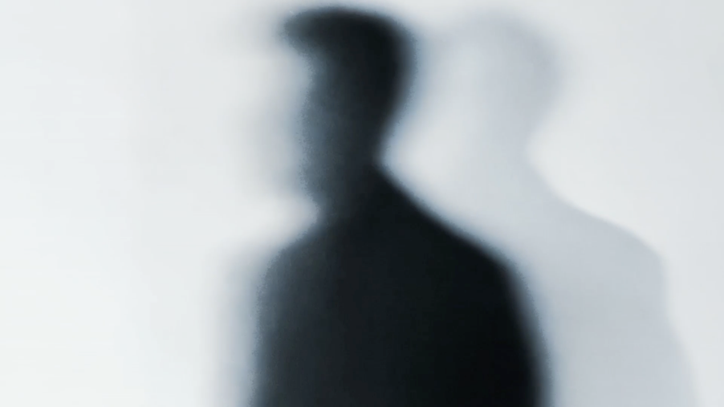
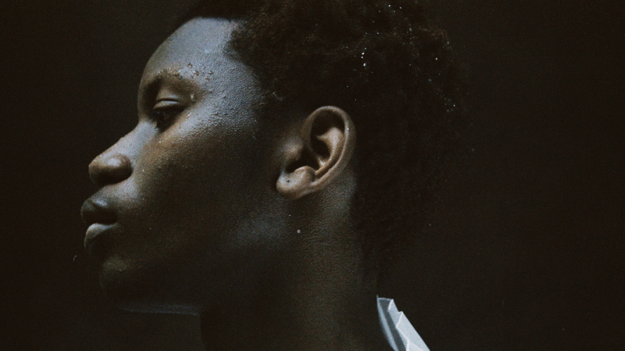
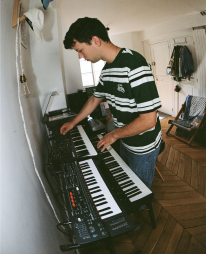

Inani
Inani is a concept hardware brand created by art director Camille Vercken de Vreuschmen. I composed the music and designed the sound for its ad spot, working with hardware synthesizers, samples and effects.

Ormeau
Ormeau is a short film directed by Juliette Roux, for which I did the sound design, ambient effects, and vocal processing. The film evokes the memory of a forgotten society, so I built an ethereal, atmospheric soundscape from layered pads, white noise, and richly textured field recordings to conjure a hazy, dreamlike mood.
-1.75
Original music for -1.75, a seven-part photography project by Jeanne Seurot. I composed three pieces designed as immersions into the images. The project unfolds across seven editions, each with its own visual atmosphere, so I responded with three hybrid tracks, woven from natural sounds and field ambiences, that give a narrative frame to the journey through the photographs.

Infos
Bienvenue dans mon portfolio. Je m’appelle Constantin. En tant que compositeur et producteur, je travaille sur divers projets originaux : supervision musicale, compositions et arrangements pour d’autres musiciens. Je travaille essentiellement avec des synthétiseurs, mon violon et le logiciel Ableton, avec une prédilection pour la manipulation de samples. Ma double formation en management et en musicologie me permet de penser les projets musicaux sur leurs deux fronts : l’exigence artistique et les enjeux stratégiques d’une commande. N’hésitez pas à me contacter pour toute question ou envie de collaboration.
Formation
ESSEC Business School — Master in Management
2021–2025
ENS Ulm — Musicologie
2025–2027